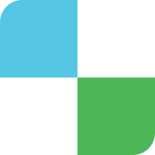
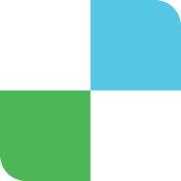
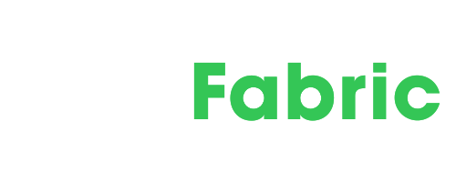
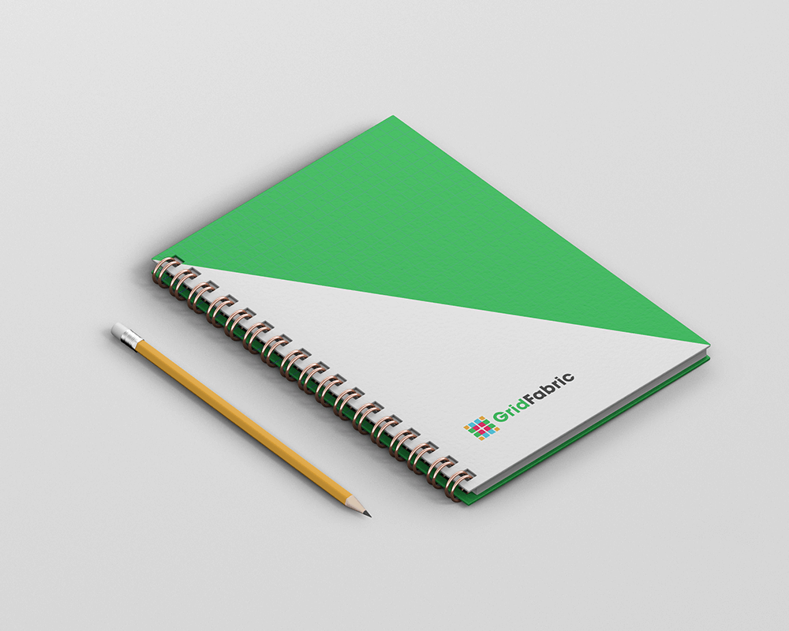
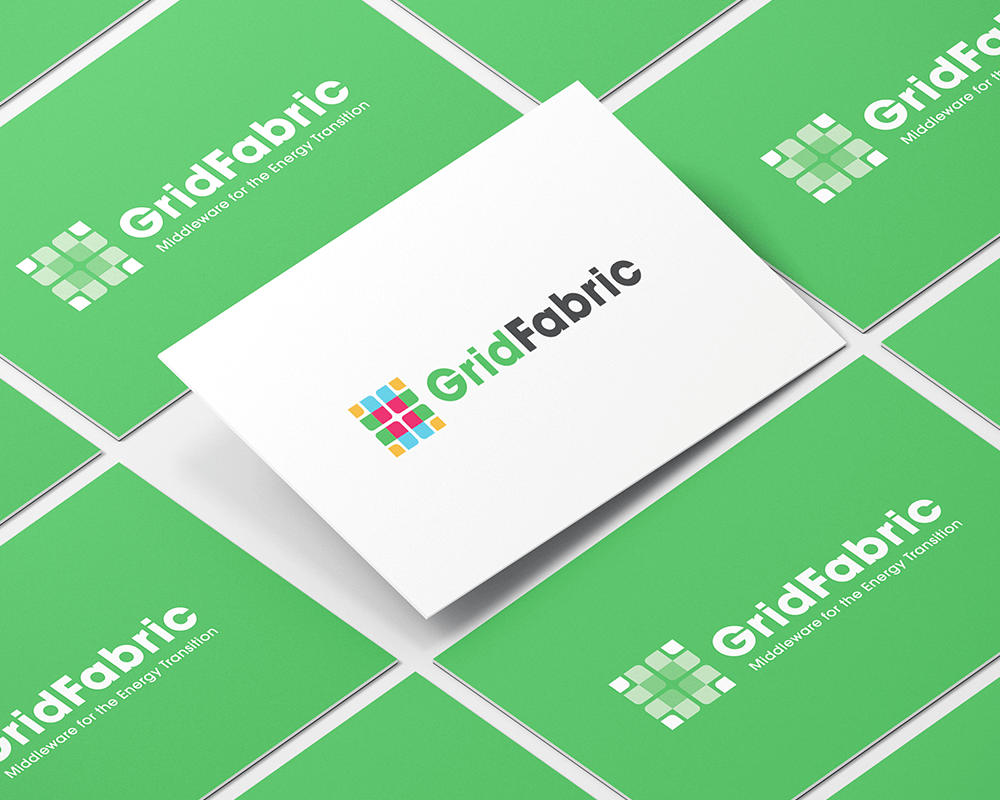
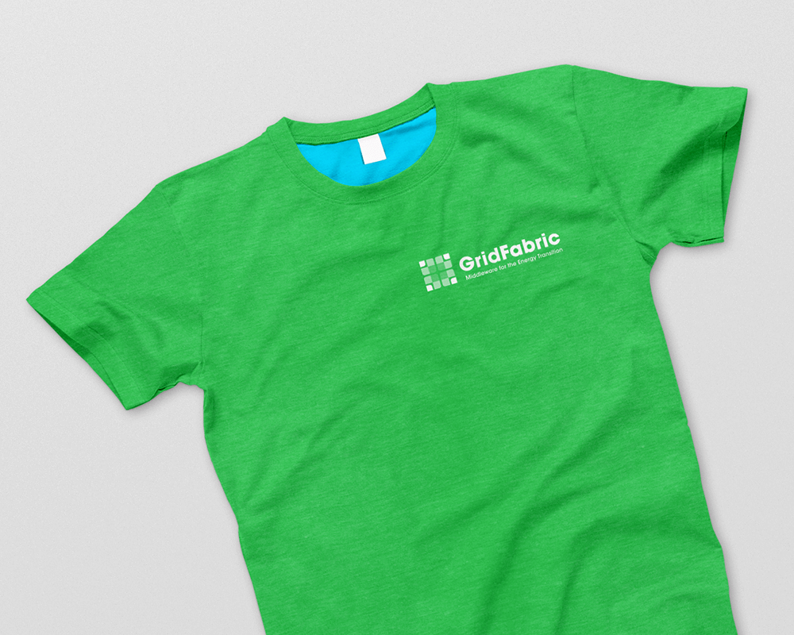
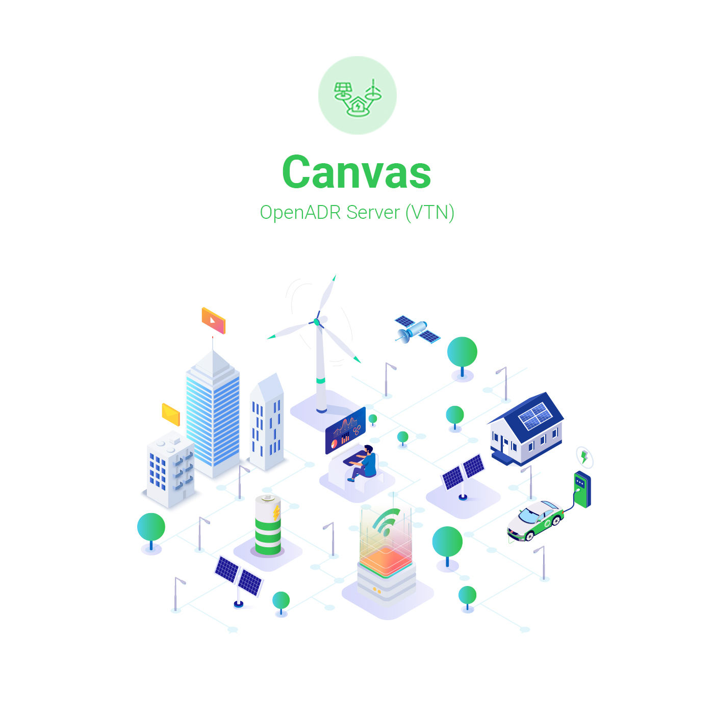
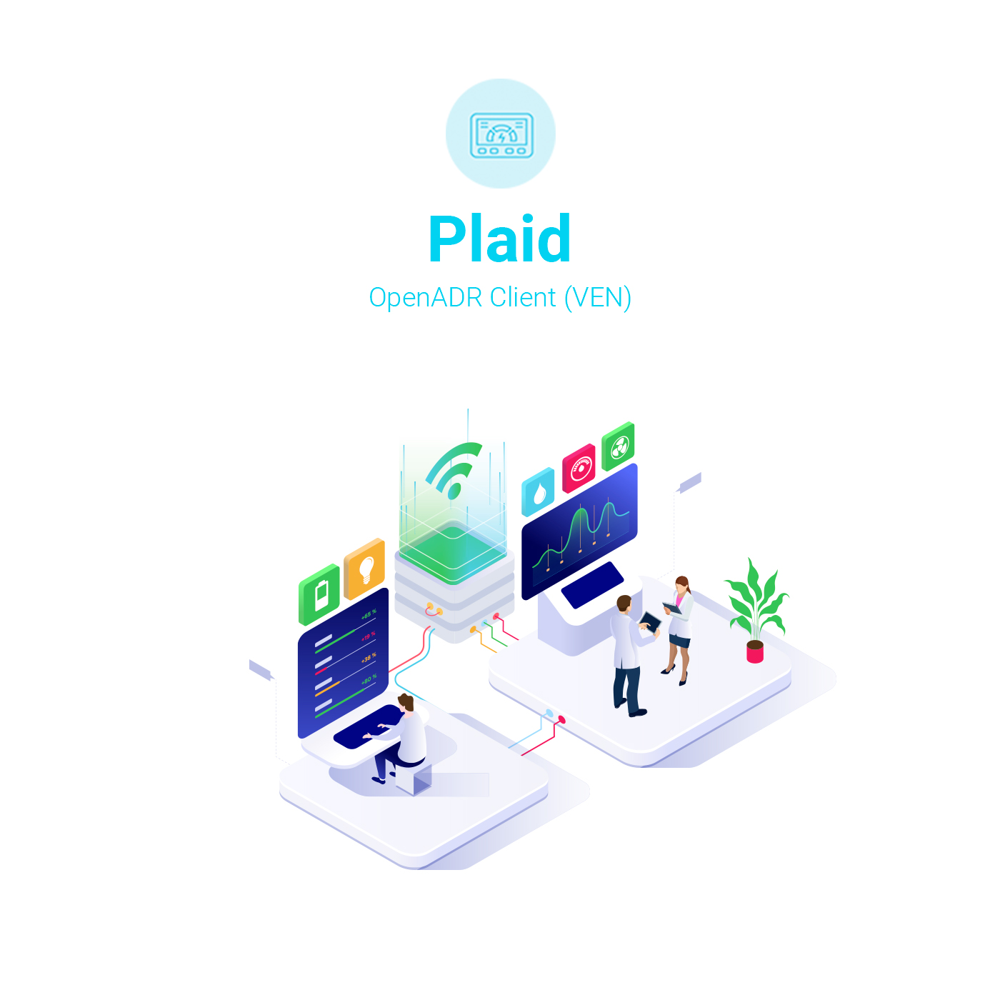

GridFabric is a San Francisco based company that creates middleware software solutions for the energy transition. They needed a brand new logo and a full website refresh to reflect a modern approach to their software offering. The new visual identity needed to compliment their software solutions in all the right places.
GridFabric Branding & Website Refresh
Utility companies don't have to be boring so when GridFabric approached me, they knew they needed an entire brand overhaul, one which would not only differentiate them from their competitors but also make them memorable. The brand needed to be modern, clean, scalable and to reflect the company's values.

Once the brand was created, it was the website's turn to receive special attention, so as to reflect the new minimalist vibrancy of the logo. A suite of colourful isometric graphics were created as companion to the software solutions. The intent was to insert a visual narrative of abstract concepts to make the information readable and to stand out.
he company needed not only a logo but also a strong visual identity to differentiate them from their competitors. The logo shape is based on a suite of patterns inspired by nature, mosaics and natural grid concepts. Many shapes were initially explored and tested in various colours and sizes but the preferred one was based on a mosaic pattern. The icon created had a sharp geometry that needed to be softened by adding rounded corners to balance out the pattern.
The colours used in the logo can loosely be interpreted as elements of nature: wind, fire, water and earth to reflect the utilities grid whether it's wind, solar or electricity that's being the focus of energy transition. After a period of research, concepts, design iterations and tests, the newly created brand resulted in a modern, minimalist and vibrant visual identity that lends itself perfectly to the industry of utilities tech.






he website refresh was closely based on the new visual identity and was done with minimal layout changes, as most of it was already built by the client. My focus was mostly on creating clean isometric graphics that would ultimately be suspended in plenty of white space to give the content poignant vibrancy and to bring attention to the solutions offering. The colours were mostly extracted from the new visual identity, with added depth for detail.
In addition to the graphics, I've re-created all of the icons found throughout the site pages, with a focus on a new suite of icons to illustrate different types of internet connected products that can participate in load shifting and to bring light to the Plaid software solution. I've also given considerable thought to content layout, colour scheme, phrasing and did the odd spellcheck, just to make sure the site is as error-free as possible.


Canvas Cloud is a SaaS solution for testing and pilots. Canvas Server is a licensed software, self-hosted VTN.
Plaid is a licensed software solution that allows IoT products of all types to add load shifting capabilities, by translating load shifting protocols into their existing APIs.
At the end of every website refresh, I always like to do a before and after set, just to track the progress and understand the radical transformation that usually happens with digital rebrands and refreshes. With GridFabric the changes weren't as radical as some of my other projects, but I love the simplicity and vibrancy of the new visuals and combined with the content re-alignment makes this one of the projects I loved working on.
Homepage - Before and After
Homepage Graphics - Before and After
Plaid Graphics - Before and After